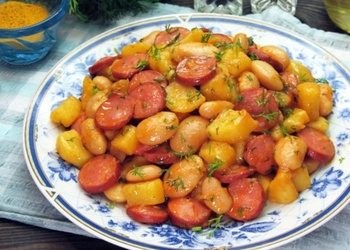

Kartupeļu ēdienu receptes
Sautēti kartupeļi ar cīsiņiem un pupiņām

apraksts
Kurš teica, ka kartupeļus nedrīkst ēst brokastīs? Pagatavošana aizņems vien 30 minūtes.
sastāvdaļas
- 500 g kartupeļu
- 300 g cīsiņu
- 460 g konservētu pupiņu tomātu mērcē
- ķiploki pēc garšas
- 2-3 krustnagliņas
- sāls pēc garšas
Pagatavosana
- Kartupeļus nomizo, noskalo un sagriež mazās šķēlēs.
- Pannā, kas iepriekš uzkarsēta ar augu eļļu, apcep kartupeļus apmēram 7 minūtes, līdz tie kļūst brūni.
- Cīsiņu sagrieziet plānās šķēlēs
- Kartupeļiem pievieno cīsiņus
- Visu kopā apcep vēl 3-4 minūtes. Pēc tam pannā ielej 100 ml ūdens,
Links uz mājas lapu
Home